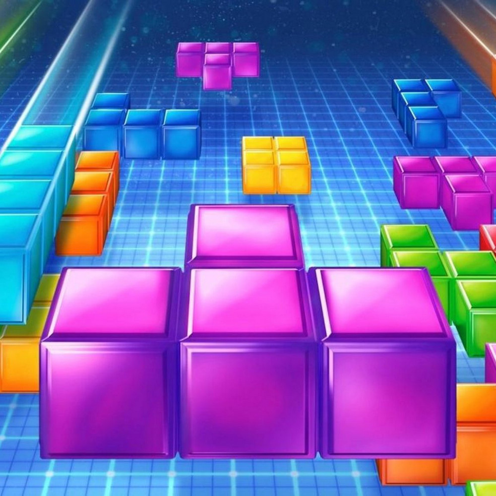
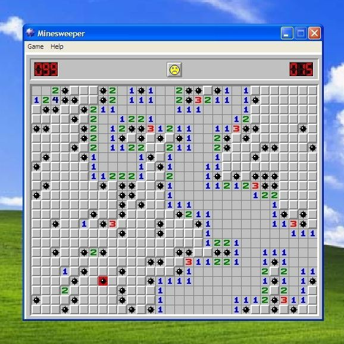
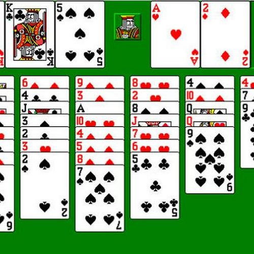
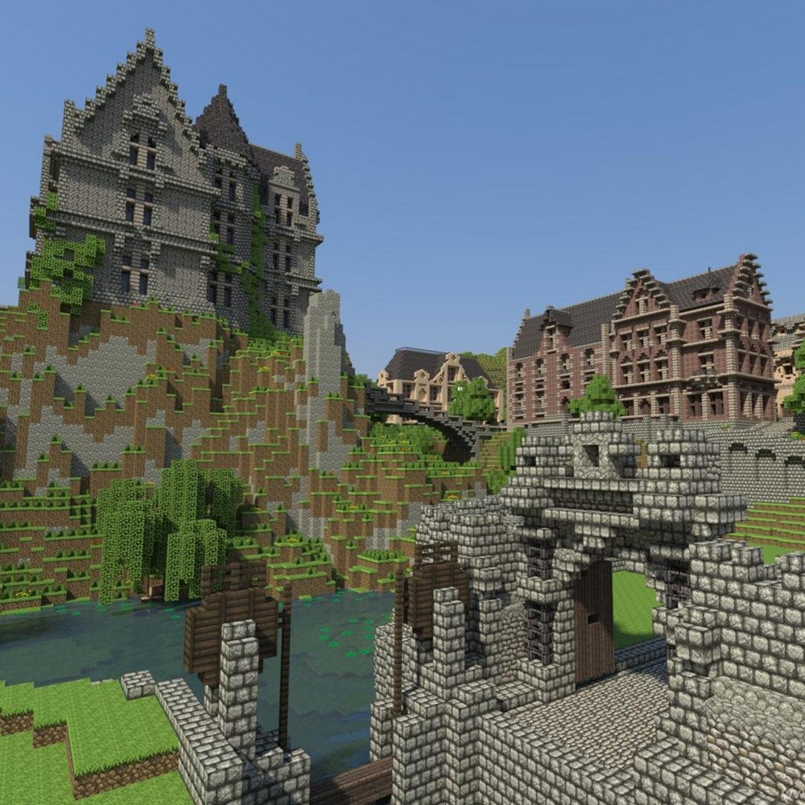
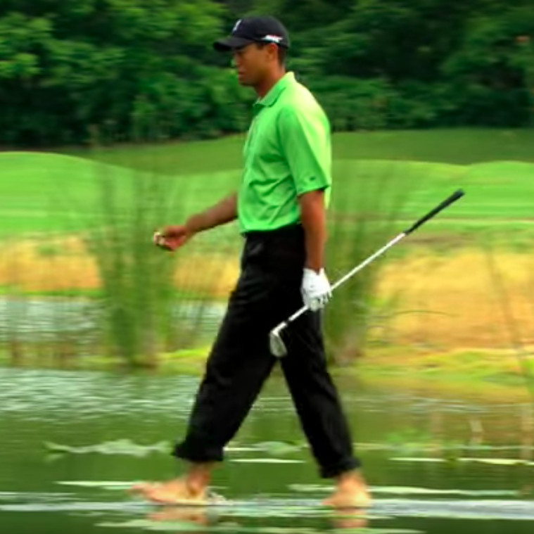
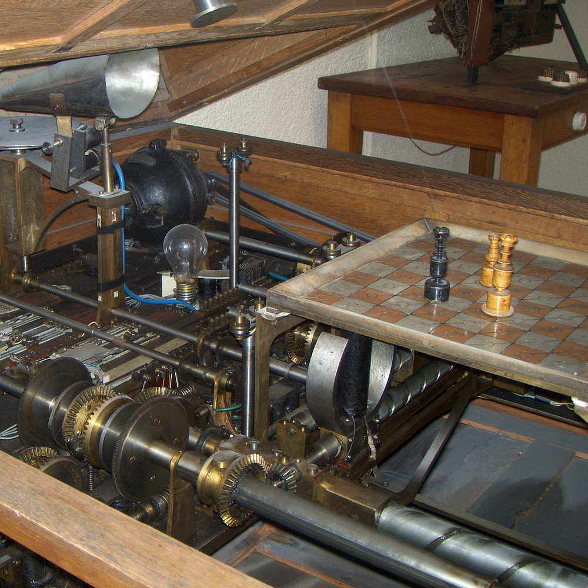

Можно ли играть в тетрис бесконечно?
Если порядок фигур в тетрисе определяется идеальным генератором
случайных чисел, то в него нельзя играть бесконечно. Рано или
поздно выпадет очень много последовательно сменяющих друг
друга серий S-фигурок и Z-фигурок, которые нельзя будет
расположить без дыр по краям поля, что в конечном счёте
приведёт к проигрышу. В практических же реализациях игры,
как правило, установлено алгоритмическое ограничение на
длинные серии идущих подряд одинаковых фигур.

Какая функция, помимо развлекательной, была возложена на «Косынку» и «Сапёра»?
Известные стандартные игры Windows — «Косынка», «Свободная ячейка»
и «Сапёр» — были включены в операционную систему неслучайно.
Помимо развлекательной функции, они, по замыслу разработчиков,
должны были помочь пользователям в освоении мыши и адаптации к
графическому интерфейсу после интерфейса командной строки. В
упомянутых пасьянсах оттачивался навык drag'n'drop, а «Сапёр»
учил точному позиционированию кликов и правильному использованию
обеих кнопок мыши.

Какова вероятность выигрыша в пасьянсе «Свободная ячейка»?
Первая версия пасьянса «Свободная ячейка» от Microsoft содержала 32 000
раскладов, а в справке было указано: «Считается (хотя и не доказано),
что данный пасьянс сходится при любом раскладе». В специальном
интернет-сообществе игроки делились решениями, и ни одному из них не
покорился расклад № 11982. Позже математически было доказано, что для
него действительно нет решения. А всего вероятность выпадения решаемой
комбинации карт в этом пасьянсе оценивается более чем в 99,99%.

Копия какой страны со всеми городами и рельефом существует в игре Minecraft?
В апреле 2014 года датское правительство сделало копию своей страны в игре Minecraft.
Для этого были использованы геоданные, уже находящиеся в открытом доступе для
граждан Дании. На карте воссозданы не только природные ландшафты, но и города
с постройками — правда, с плоскими крышами и случайными цветами фасадов.
Карта максимально приближена к реальности и благодаря тому, что самая
высокая точка Дании — 171 метр над уровнем моря, а движок Minecraft
позволяет строить блоки до высоты 192 метра.

Зачем гольфист Тайгер Вудс снялся в ролике о том, что он может ходить по воде?
После выхода игры Tiger Woods PGA Tour 08 компания-разработчик Electronic Arts
получила много жалоб от геймеров на то, что можно ударить по мячу, лежащему
на поверхности водоёма. В ответ на эти претензии был снят вирусный ролик,
героем которого стал настоящий Тайгер Вудс. Он, как ни в чём ни бывало, прошёл
по воде и нанёс точный удар, а недоразумение в игре Electronic Arts объявила
«не багом, а фичей».

Что мог делать автомат 1912 года, считающийся первой в мире компьютерной игрой?
В 1912 году, задолго до появления прообразов современных компьютеров, испанский инженер
Леонардо Торрес-и-Кеведо сконструировал электромеханический автомат «El Ajedrecista»,
который считается первой в истории компьютерной игрой. Устройство представляло собой
шахматную доску с передвигаемыми машиной с помощью электромагнитов королём и ладьёй,
а также королём другого цвета, которого перемещал человек. Автомат, пусть и не за
минимальное количество ходов, гарантированно завершал этот шахматный эндшпиль матом
оппоненту.